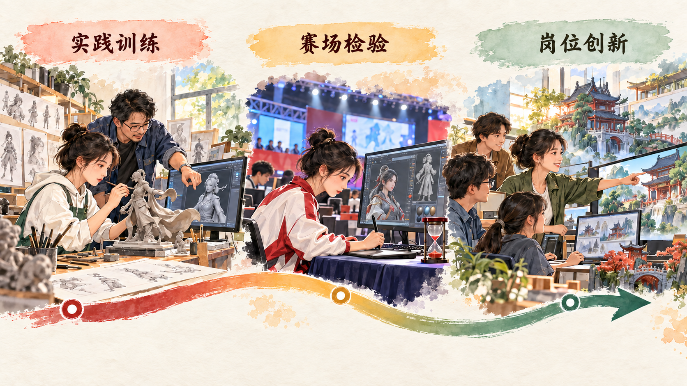

怎样让各类人才各得其所、各展其长
人才是实现民族振兴、赢得国际竞争主动的战略资源。本节从人才培养的长周期进入德才兼备的要求，再分析人才发现、评价、使用和集聚。建设人才强国既需要培养战略科学家和科技领军人才，也需要卓越工程师、大国工匠、高技能人才以及各领域专业人才。
一、培养人才是国家和民族长远发展大计
人才成长具有长期性。基础知识、专业训练、实践经验、创新能力和职业品格需要在学习与工作中逐步积累。国家今天建设的教育体系、科研平台和人才制度，会影响未来几十年的发展能力。
人才也是国际竞争的重要变量。创新最活跃、发展机会充足、制度环境良好的地方，更容易集聚人才。我国加快建设世界重要人才中心和创新高地，需要把握战略主动，做好顶层设计和战略谋划，根据国家发展需要和人才成长规律进行布局，为人才提供事业平台、创新条件和发展空间。
二、培养造就大批德才兼备的高素质人才
德才兼备要求把政治品格、社会责任、职业伦理同专业能力统一起来。科技工作者要尊重事实和科研诚信，教师要承担育人责任，工程技术人员要把质量和安全落实到产品，技能人才要在操作中追求精益求精。不同职业的“德”与“才”具有共同要求，也需要结合岗位任务具体理解。
人才培养还要处理数量与质量、通识与专业、理论与实践的关系。课堂学习提供概念和方法，实验实训形成操作与验证能力，项目实践训练协作和解决问题，真实岗位使人才在责任和反馈中继续成长。

案例研究｜“00 后”怎样拿下 3D 数字游戏艺术世界冠军
3D 数字游戏艺术接近大学生熟悉的游戏、动画和数字内容，比赛现场却像一场高度压缩的真实项目。选手需要理解题目、完成原画设计和三维建模，把作品输入游戏引擎，还要处理技术细节、进度压力和临场变化。第 47 届世界技能大赛 2024 年 9 月在法国里昂闭幕，来自重庆的 22 岁选手巫妍婷获得 3D 数字游戏艺术项目金牌。
巫妍婷就读于重庆工商职业学院影视动画专业。她喜欢游戏和思考，希望进入数字艺术领域，又主动学习编程，并把编程用于毕业设计。艺术训练帮助她理解形象、比例、色彩和叙事，程序与软件训练帮助她把设计转化为可以运行的数字作品。跨专业学习使她在面对综合任务时拥有更多解决路径。
备赛把兴趣转化为稳定能力。重庆市政府网站报道，她的训练通常从早上 8 时持续到晚上 10 时。训练包含阅读任务书、分析角色与场景、绘制原画、建立三维模型、制作材质、完成动作或效果、输入游戏引擎和检查最终呈现。每个模块既有作品质量要求，也有严格时间限制。
发现自己的手速偏慢后，她没有简单增加重复次数，而是逐项拆解操作，把部分需要五六步的流程压缩到两三步。例如，常用命令可以重新组合快捷键，重复建模动作可以形成标准流程，文件命名和素材管理也能减少查找时间。指导教师冯启晏根据比赛模块诊断短板，安排原创设计和限时模拟，使她在构思、建模和技术流程之间建立稳定节奏。
比赛带来了计划之外的变化。最后一个引擎输入模块增加了技术编程内容，她此前的自学经验立即转化为临场能力。在原画设计、建模和引擎输入之间，她需要不断判断时间分配、作品质量和技术可行性：原画决定角色风格，模型要准确还原结构，材质和光照影响画面表现，程序与引擎设置决定作品能否正常运行。报道显示，她在原画和建模的主观、客观评分中表现突出，最终完成整套任务。
这块金牌由个人努力、学校培养、教师指导和竞赛标准共同支撑。职业院校提供影视动画课程、软件条件和实训环境，教师根据任务表现调整训练，世界技能大赛用接近职业现场的综合任务检验能力，学生通过反复练习形成方法。赛后，她计划把经验教给学弟学妹，竞赛中形成的快捷操作、时间安排和故障处理方法由个人经验转化为新的教学资源。
| 成长环节 | 具体行动 | 形成的能力 |
|---|---|---|
| 专业学习 | 学习原画、三维建模、软件工具和影视动画知识 | 审美表达与数字制作基础 |
| 主动拓展 | 自学编程，并把编程用于毕业设计 | 跨学科理解与技术迁移 |
| 针对训练 | 拆解操作、重设快捷流程、完成限时原创任务 | 速度、稳定性和过程优化 |
| 赛场检验 | 在临时变化中完成原画、建模和引擎输入 | 综合判断、心理调节与现场应变 |
| 经验传递 | 把备赛方法和操作经验用于后续教学 | 团队成长与教学反哺 |
3D 数字游戏艺术连接文化创意、软件工具、工程流程和团队协作，可以进入游戏、动画、影视、数字文旅和文化产品设计等岗位。巫妍婷的成长显示，技能人才既能把设计构想变成可操作的作品，也能在工艺和流程中持续创新。人才评价也因此需要观察作品质量、实践能力、问题解决和岗位贡献。
讨论题
- 巫妍婷用操作技巧弥补手速短板，说明人才培养中“练习次数”和“方法改进”是什么关系？
- 3D 数字游戏艺术为什么同时需要艺术能力和技术能力？请列出一个具体工作任务。
- 如果大学以比赛成绩作为人才评价的唯一标准，会遗漏哪些能力和贡献？
资料来源：重庆市人民政府《三位“00”后技能健儿的夺金故事》，2024 年 9 月 19 日；人力资源和社会保障部《第 47 届世界技能大赛获奖选手和为参赛工作作出突出贡献的个人名单》，2024 年 11 月。
三、把各方面优秀人才集聚到党和国家事业中来
人才工作既要培养人，也要发现、评价、使用和激励人。不同人才从事的工作不同，成果形成周期不同，评价标准也应体现职业、岗位和贡献特点。基础研究人才重在原创价值和长期贡献，应用技术人才重在解决实际问题和成果转化，技能人才重在操作水平、质量和工艺改进，哲学社会科学人才重在思想理论创新和服务社会能力。
把人才集聚起来，需要事业平台、评价制度、科研环境和公共服务共同发挥作用。用人主体要给予人才合理自主权，团队要形成协作和信任，评价要突出品德、能力、业绩和贡献，政策要支持青年人才在重大任务和真实项目中成长。
建设世界重要人才中心和创新高地，还要形成具有吸引力和国际竞争力的人才制度体系。人才可以在高校、科研院所、企业和公共部门之间形成合理流动，在开放合作中交流知识，在承担国家和社会需要的任务中实现个人价值。
参考资料｜人才评价为什么需要分类尺度
2018 年印发的《关于分类推进人才评价机制改革的指导意见》提出，以职业属性和岗位要求为基础，分类建立人才评价体系，综合考察品德、知识、能力、业绩和贡献。考试、评审、考核认定、面试答辩、实践操作和业绩展示等评价方式可以根据岗位特点组合使用。
同年印发的《关于深化项目评审、人才评价、机构评估改革的意见》进一步区分科研活动：基础前沿研究突出原创导向，主要依靠同行评议；社会公益性研究突出需求导向，重视行业用户和社会评价；应用技术开发和成果转化突出企业主体、市场导向，重视用户评价、第三方评价和市场绩效。
设想三名人才同时参加评价。一名青年学者长期研究尚无直接产品的基础理论，评价重点应放在原创问题、学术质量和长期潜力；一名工程师解决生产线稳定性问题，评价应观察技术效果、质量改进和用户反馈；一名技能人才改进操作流程，使产品合格率和生产效率提高，实践操作、工艺贡献和现场解决问题的能力应进入评价。三人都作出贡献，证据形式和成果周期各不相同。
评价方法也可以随任务变化。学术同行评议适合判断专业创新，实际操作可以观察技能水平，成果展示和用户评价能够反映应用效果，面试答辩可以了解本人贡献和解决问题的过程。品德、知识、能力、业绩和贡献共同构成评价维度，职业属性、岗位职责和工作阶段决定各维度怎样组合。
| 人才类型 | 工作特点 | 可采用的主要证据 |
|---|---|---|
| 基础研究人才 | 探索周期长，成果可能暂时没有直接产品 | 代表性成果、同行评价、原创问题和持续研究能力 |
| 公益性研究人才 | 面向公共卫生、生态、气象等社会需要 | 服务对象反馈、社会效益、数据与公共服务质量 |
| 工程技术人才 | 把知识转化为系统、装备和生产工艺 | 技术报告、工程验证、质量改进、用户评价和本人贡献 |
| 技能人才 | 在真实操作中保证精度、质量和效率 | 现场操作、工艺创新、职业资格、竞赛表现和带徒成效 |
| 哲学社会科学人才 | 形成思想、理论和政策解释 | 学术质量、社会影响、决策参考和长期理论贡献 |
分类评价还要处理团队成果与个人贡献。重大科技工程通常由大团队完成，评价时可以要求说明个人承担的模块、解决的关键问题和同其他成员的协作关系。青年人才处于成长阶段，评价可以同时观察已经形成的成果、发展潜力和承担新任务的能力。代表性成果制度则引导评价者深入阅读少量重要成果，了解其真实价值和本人贡献。
分类评价把“人才是否优秀”转化为“人才在什么岗位、承担什么任务、形成什么能力、作出什么贡献”。评价标准贴近工作过程，有助于发现不同类型人才，引导人才把精力投入长期积累和真实问题，也为用人单位安排岗位、提供支持和形成团队协作提供依据。它还提示学生，大学期间的课程成绩、研究作品、社会实践、技能操作和团队贡献可以分别呈现不同能力，个人成长需要寻找与目标岗位相匹配的真实任务。
资料来源：中共中央办公厅、国务院办公厅《关于分类推进人才评价机制改革的指导意见》，2018 年 2 月 26 日；《关于深化项目评审、人才评价、机构评估改革的意见》，2018 年 7 月 3 日。